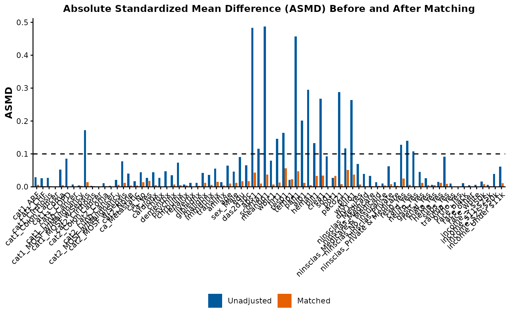
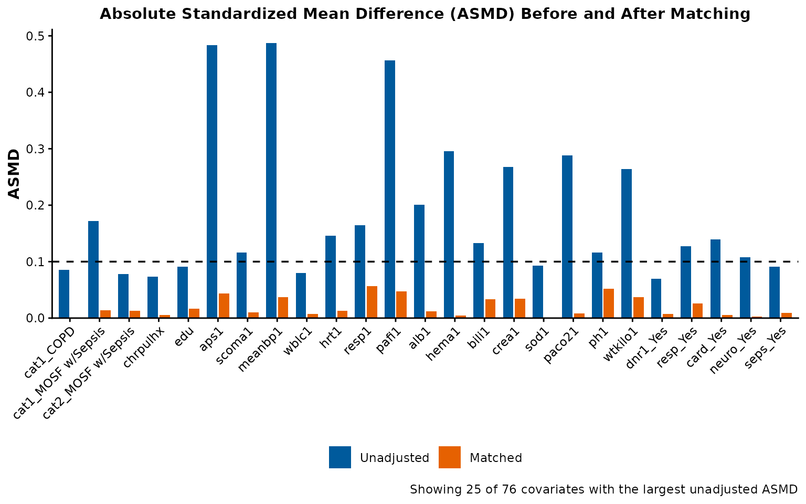
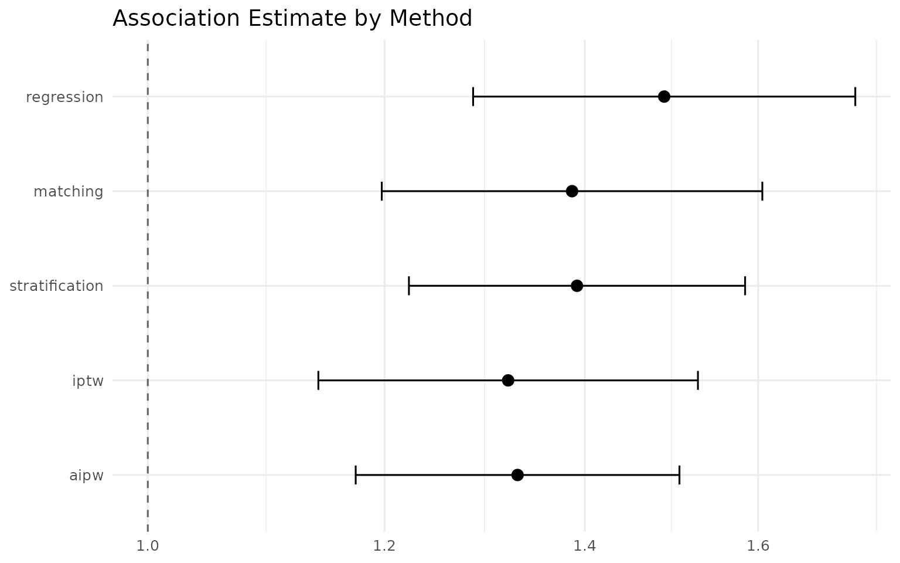
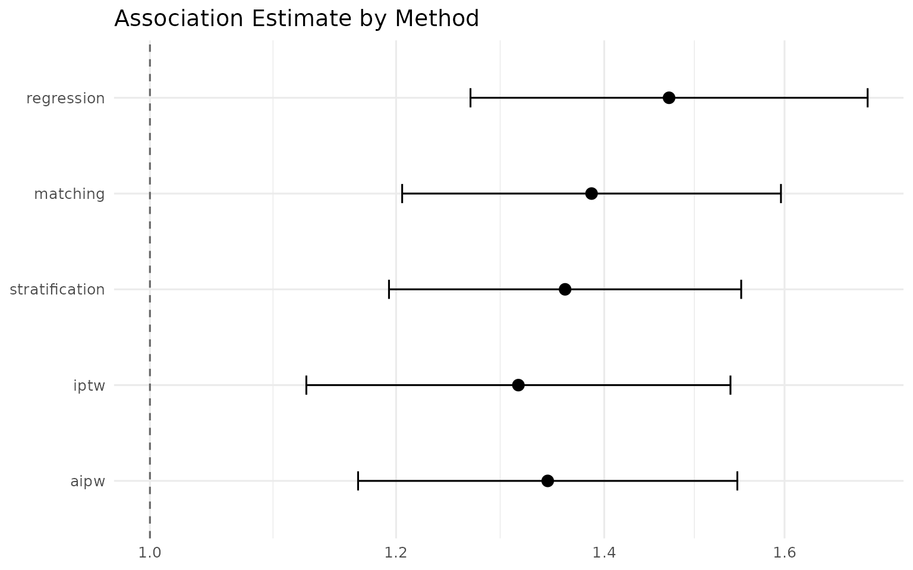
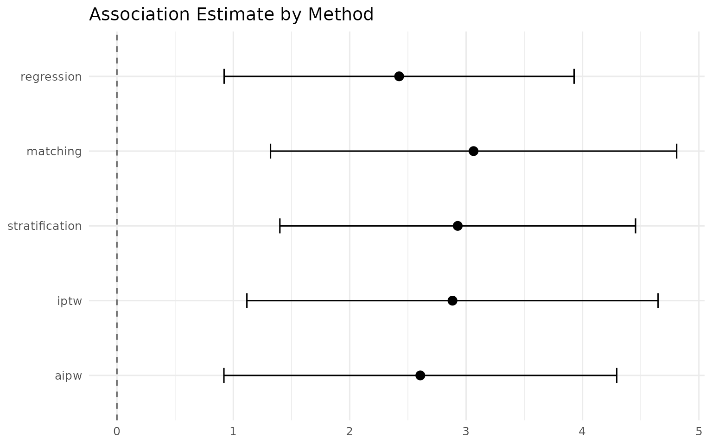

Case study: right heart catheterization and ICU mortality
rhc-validation.RmdIntroduction
This vignette validates the package’s five confounding-adjustment methods on a real, well-known observational dataset: the Right Heart Catheterization (RHC) cohort from the SUPPORT study. Connors et al. (1996, JAMA) enrolled 5,735 critically ill adults across five U.S. teaching hospitals (1989-1994) and found that right heart catheterization — a diagnostic procedure, not a treatment in itself — was associated with increased mortality and greater resource use, contradicting the clinical assumption at the time that it was beneficial. Because the direction of that finding is well established and has been reproduced by dozens of independent reanalyses since, RHC is one of the standard benchmark datasets in the causal-inference literature, and it gives this package a real cohort to validate against, not just simulated data.
We analyze three outcomes: 30-day mortality (dth30),
longer-term mortality by 180 days (death), and hospital
length of stay in days (los). We check whether all five
adjustment methods — two that model the outcome directly (regression,
matching) and three that model the propensity of receiving RHC
(stratification, IPTW, AIPW) — agree on the direction of the
association. Agreement across five methods that make different modeling
assumptions is evidence the finding isn’t an artifact of any single
model’s specification. It is not, by itself, proof of a causal effect —
see the Caveat section at the end.
The five methods
Each method adjusts for the same 50 confounders but in a different way, and several lean on the propensity score — a single number per patient summarizing how likely they were to receive RHC given their baseline characteristics. In plain terms:
- Regression — “fit a multivariable model that includes the exposure and all the confounders at once, and read off the exposure’s association.” More precisely: a single covariate-adjusted regression (logistic for binary outcomes, linear for continuous) fit on the full, unmatched cohort. Uses every patient, but its validity rests entirely on the outcome model being correctly specified; no propensity score is involved.
- Matching — “pair each RHC patient with a non-RHC patient who looks similar on the confounders, then compare outcomes within the pairs.” More precisely: 1:1 nearest-neighbor propensity-score matching (caliper 0.2 SD of logit-PS), followed by conditional logistic regression (binary outcomes) or a pair-stratified linear model (continuous outcomes) on just the matched subset.
- Stratification — “sort patients into a few similar-risk groups, compare RHC vs non-RHC within each group, and pool those comparisons.” More precisely: splits the cohort into propensity-score strata and pools the within-stratum associations into one overall estimate. Keeps the full sample and controls confounding by comparing only patients with similar propensity scores.
-
IPTW — “reweight the sample so the RHC and non-RHC
groups look alike on the confounders, then compare the reweighted groups
as if they were two randomized arms.” More precisely: weights each
patient by the inverse of their estimated probability of receiving the
exposure they actually received, then fits an exposure-only weighted
regression. As of
IndepAssoc0.4.0 this is a plain marginal structural model — the weights alone carry the adjustment, there is no additional covariate adjustment layered on top. - AIPW — “run the reweighting and an outcome regression together, so a mistake in one model can be rescued by the other.” More precisely: combines a propensity-score model and an outcome regression model via the augmented-IPW formula. It is “doubly robust”: the estimate stays consistent if either model is correctly specified, not necessarily both, making it more resilient to model misspecification than regression or IPTW used alone.
Estimand: what each method actually targets
The five methods do not all estimate the same causal quantity — put simply, they answer for different populations. The ones to keep straight:
- ATT — the effect on those who got RHC. Matching targets the average treatment effect on the treated (ATT): only treated patients that found a control match remain in the analysis, so the estimate describes the treated population by construction.
- ATE — the effect over the whole cohort. IPTW and AIPW target the average treatment effect (ATE) over the full analytic sample: every patient contributes, reweighted (IPTW) or via augmented influence functions (AIPW), so the comparison mimics two exposure groups drawn from the full sample’s covariate distribution.
-
Stratification pools stratum-specific effects
across the full analytic sample — a common odds ratio via the
Cochran-Mantel-Haenszel method for binary outcomes, an
inverse-variance-weighted mean difference for continuous outcomes — a
full-sample, stratum-pooled estimate rather than a strict marginal ATE.
(With the new
estimand = "ATT"option, stratification instead pools each stratum’s effect weighted by its number of treated units, and is then genuinely ATT-consistent.) - Regression reports a conditional effect: the coefficient is adjusted for the listed covariates. For binary outcomes the odds ratio is non-collapsible (a mathematical property, not a modeling choice — the odds ratio does not average across subgroups to equal a marginal effect, even with a perfectly specified model), so it is not numerically equal to a marginal ATE even when the model is correct.
So when the five rows below agree in direction and rough magnitude, that is real evidence of robustness — but they are five related quantities, not five independent measurements of a single parameter.
Data preparation
data(rhc_sample)
rhc <- rhc_sample$data
covariates <- rhc_sample$covariates
exposure <- "swang1"
nrow(rhc)
#> [1] 5735
length(covariates)
#> [1] 50
table(RHC = rhc[[exposure]])
#> RHC
#> 0 1
#> 3551 2184The cohort ships with the package as rhc_sample, already
cleaned by prepare_rhc_data(): the exposure
swang1 is coded 0/1 (1 = received RHC within 24 hours of
ICU admission), and the covariate vector holds 50 baseline
characteristics — demographics, primary/secondary disease category,
comorbidities, and physiologic measurements — chosen because they retain
the full sample under complete-case analysis. (Two variables from the
raw file, adld3p and urin1, are excluded: both
are missing in more than half the cohort, and including either would
collapse the usable sample from 5,735 patients to a few hundred.)
Outcomes
outcomes <- data.frame(
name = c("dth30", "death", "los"),
label = c("30-day mortality", "180-day mortality",
"Hospital length of stay (days)"),
type = c("binary", "binary", "continuous"),
stringsAsFactors = FALSE
)dth30 and death are not the same outcome,
and the difference matters: dth30 is mortality within a
fixed 30-day window; death captures mortality over the
study’s longer, 180-day follow-up, so every patient with
dth30 = 1 also has death = 1, but not the
reverse. Reporting both, rather than treating them as interchangeable,
is deliberate — it lets us see whether an early-mortality signal
persists over a longer horizon.
A binary 0/1 outcome doesn’t have a meaningful median or quartiles,
so summarizing it with summary() (as you would for a
continuous variable) produces numbers that are technically correct but
not clinically interpretable — it reports what looks like a five-number
summary of “0.35 of a death.” The block below reports what actually
matters for a binary outcome — the event count and proportion — and
reserves summary() for the one genuinely continuous
outcome, los. It also reports how much missing data each
outcome has, since that determines each outcome’s analytic sample size
later in this vignette, rather than assuming it up front.
for (i in seq_len(nrow(outcomes))) {
nm <- outcomes$name[i]
cat("\n", outcomes$label[i], " (`", nm, "`):\n", sep = "")
if (outcomes$type[i] == "binary") {
tab <- table(rhc[[nm]], useNA = "ifany")
print(tab)
cat("Event proportion:",
round(mean(rhc[[nm]] == 1, na.rm = TRUE), 3), "\n")
} else {
print(summary(rhc[[nm]]))
}
cat("Missing:", sum(is.na(rhc[[nm]])), "of", nrow(rhc), "\n")
}
#>
#> 30-day mortality (`dth30`):
#>
#> 0 1
#> 3817 1918
#> Event proportion: 0.334
#> Missing: 0 of 5735
#>
#> 180-day mortality (`death`):
#>
#> 0 1
#> 2013 3722
#> Event proportion: 0.649
#> Missing: 0 of 5735
#>
#> Hospital length of stay (days) (`los`):
#> Min. 1st Qu. Median Mean 3rd Qu. Max. NAs
#> 2.00 7.00 14.00 21.49 25.00 342.00 1
#> Missing: 1 of 5735Running the pipeline
Each outcome is analyzed on its own complete-case sample — patients
with non-missing values for the exposure, all 50 covariates, and that
specific outcome. In practice dth30 and death
are fully observed on this cohort (confirmed by the “Missing: 0” lines
above), so their complete-case samples are identical to the full
5,735-patient cohort; los has a small number of patients
missing a discharge or admission date, so its analytic sample is
marginally smaller. Filtering explicitly, rather than letting each
internal model silently drop missing rows on its own, makes the exact
analytic sample size for each outcome visible up front.
We pass seed = 1 directly to run_pipeline()
for every outcome, rather than calling set.seed() once
before the loop. run_pipeline()’s seed
argument resets the random state at the very start of each call, so —
because matching depends only on the exposure and covariates, never on
the outcome being analyzed — dth30 and death
end up drawing the same matched cohort (they share an identical
complete-case sample), while los’s matched cohort can
differ very slightly, since it starts from a marginally different set of
patients.
methods <- c("regression", "matching", "stratification", "iptw", "aipw")
run_one_outcome <- function(name, type) {
analytic_sample <- rhc[stats::complete.cases(rhc[, c(exposure, covariates, name)]), ]
run_pipeline(
data = analytic_sample,
exposure = exposure,
covariates = covariates,
outcome = name,
type = type,
methods = methods,
seed = 1
)
}
results_list <- setNames(
lapply(seq_len(nrow(outcomes)),
function(i) run_one_outcome(outcomes$name[i], outcomes$type[i])),
outcomes$name
)Balance check before and after matching
Matching depends only on the exposure and the 50 covariates, so the
same balance chart applies to every outcome that shares this cohort’s
exposure and covariate set; we show it once, from the dth30
run.
results_list$dth30$balance_plot
The dashed line marks the 0.10 absolute-standardized-mean-difference (ASMD) threshold conventionally used to define adequate covariate balance — ASMD is a scale-free measure of how far apart the RHC and non-RHC groups are on a covariate, in standard-deviation units. Most covariates in this cohort start well above that line before matching — the RHC literature has repeatedly documented substantial baseline imbalance between patients who did and didn’t receive RHC — and matching should bring most, though not necessarily every, covariate under the threshold. Rather than asserting which covariates end up on which side of that line, treat the chart above as the answer: it reflects this specific run, not a general claim.
Truncated view: the 25 most-imbalanced covariates
The full chart above is dense by construction: the 50 covariates
include several multi-level categorical variables (cat1,
cat2, ninsclas, income,
race), which expand to roughly 76 bars and leave the x-axis
labels hard to read. plot_asmd_balance() offers an opt-in
top_n argument that shows only the covariates with the
largest unadjusted (pre-matching) ASMD — which is what the chart exists
to communicate — and labels the chart with exactly how many of the total
it is showing:
plot_asmd_balance(results_list$dth30, top_n = 25)
Results by outcome
Each table below is the vignette’s core result: whether five methods that work differently agree on the direction and size of RHC’s association with that outcome. The forest plot beside each table draws the same numbers, with the confidence intervals made visible.
for (i in seq_len(nrow(outcomes))) {
nm <- outcomes$name[i]
type <- outcomes$type[i]
cat("\n\n###", outcomes$label[i], "\n\n")
print(knitr::kable(
format_comparison(results_list[[nm]]$comparison),
align = "lrrrr"
))
cat("\n\n")
print(plot_comparison(results_list[[nm]]$comparison,
log_scale = (type == "binary")))
cat("\n\n")
}30-day mortality
| Method | OR | 95% CI | p-value | n |
|---|---|---|---|---|
| Regression | 1.49 | 1.28–1.72 | <0.001 | 5735 |
| Matching | 1.39 | 1.20–1.61 | <0.001 | 3370 |
| Stratification | 1.39 | 1.22–1.58 | <0.001 | 5735 |
| IPTW | 1.32 | 1.14–1.53 | <0.001 | 5735 |
| AIPW | 1.33 | 1.17–1.51 | <0.001 | 5735 |

180-day mortality
| Method | OR | 95% CI | p-value | n |
|---|---|---|---|---|
| Regression | 1.47 | 1.27–1.70 | <0.001 | 5735 |
| Matching | 1.39 | 1.21–1.60 | <0.001 | 3370 |
| Stratification | 1.36 | 1.19–1.55 | <0.001 | 5735 |
| IPTW | 1.31 | 1.12–1.54 | <0.001 | 5735 |
| AIPW | 1.34 | 1.17–1.55 | <0.001 | 5735 |

Hospital length of stay (days)
| Method | Mean Diff | 95% CI | p-value | n |
|---|---|---|---|---|
| Regression | 2.42 | 0.92–3.93 | 0.002 | 5734 |
| Matching | 3.06 | 1.32–4.81 | <0.001 | 3372 |
| Stratification | 2.93 | 1.40–4.46 | <0.001 | 5734 |
| IPTW | 2.88 | 1.12–4.65 | 0.001 | 5734 |
| AIPW | 2.61 | 0.92–4.29 | 0.002 | 5734 |

dth30 and death report an odds ratio;
los reports a mean difference in days.
IndepAssoc’s own validated testing of this exact cohort
(the package’s original single-outcome RHC analysis) found all five
methods agreeing that RHC is associated with increased 30-day
mortality — odds ratios roughly in the 1.3-1.5 range, confidence
intervals excluding 1 — and with a longer hospital stay,
roughly 2.5-3 additional days, confidence intervals excluding 0. The
dth30 and los tables above should reproduce
that same pattern; if they don’t, that’s worth investigating rather than
dismissing, since it would mean something about the analytic sample or
package version differs from what was previously validated.
One caveat on los specifically: hospital length of stay
is heavily right-skewed and bounded at zero (in the summary above,
median 14 days, mean 21.5, maximum 342). The linear model reports a mean
difference on the original day scale, which is a common simplification —
including in the two source papers this package generalizes — but not
the most distributionally appropriate choice for an outcome with this
shape: a log-transform or a Gamma GLM would fit it better. Read the
los mean difference as a convenient, interpretable summary,
not as evidence that a day-scale linear model is the ideal
specification.
For death, there is no prior validated result to compare
against in this vignette — read the table above on its own terms. Given
that every dth30 = 1 patient is also
death = 1, a similar direction of association would not be
surprising, but the 180-day window gives more time for events unrelated
to the index RHC decision to occur, so the magnitude need not match the
30-day analysis exactly. The table is the answer; this paragraph is only
a guide to reading it, not a substitute for it.
What if the methods had disagreed?
All three outcomes above show five methods landing on the same side
of the null, which is the reassuring case. It’s worth being explicit
about the alternative, since a real analysis on a new dataset won’t
always look this clean. If, say, regression and IPTW had pointed in
opposite directions — one estimating harm, the other estimating benefit
or no effect — that would not be a coin flip to resolve by picking a
favorite; it would be a diagnostic signal. The next steps would be to
(1) re-check check_positivity() for extreme propensity
scores or inflated IPTW weights, since IPTW is the more sensitive of the
two to poor overlap; (2) compare the matching- and regression-based
estimates specifically, since a large gap between them often points to
outcome-model misspecification (regression) rather than a genuine
population difference; and (3) inspect the balance table to confirm the
matched or weighted sample is actually comparable on the confounders
that matter clinically, not just on the propensity score as a whole.
Disagreement across methods is information, not noise — it tells you
where to look, the same way agreement (as seen above) tells you the
finding is not an artifact of one method’s assumptions.
Combined comparison across outcomes
combined_comparison <- do.call(rbind, lapply(seq_len(nrow(outcomes)), function(i) {
nm <- outcomes$name[i]
cbind(Outcome = outcomes$label[i],
results_list[[nm]]$comparison)
}))
combined_formatted <- format_combined(combined_comparison)
knitr::kable(combined_formatted, align = "llrrrr", row.names = FALSE)| Outcome | Method | Estimate | 95% CI | p-value | n |
|---|---|---|---|---|---|
| 30-day mortality | Regression | 1.49 | 1.28–1.72 | <0.001 | 5735 |
| 30-day mortality | Matching | 1.39 | 1.20–1.61 | <0.001 | 3370 |
| 30-day mortality | Stratification | 1.39 | 1.22–1.58 | <0.001 | 5735 |
| 30-day mortality | IPTW | 1.32 | 1.14–1.53 | <0.001 | 5735 |
| 30-day mortality | AIPW | 1.33 | 1.17–1.51 | <0.001 | 5735 |
| 180-day mortality | Regression | 1.47 | 1.27–1.70 | <0.001 | 5735 |
| 180-day mortality | Matching | 1.39 | 1.21–1.60 | <0.001 | 3370 |
| 180-day mortality | Stratification | 1.36 | 1.19–1.55 | <0.001 | 5735 |
| 180-day mortality | IPTW | 1.31 | 1.12–1.54 | <0.001 | 5735 |
| 180-day mortality | AIPW | 1.34 | 1.17–1.55 | <0.001 | 5735 |
| Hospital length of stay (days) | Regression | 2.42 | 0.92–3.93 | 0.002 | 5734 |
| Hospital length of stay (days) | Matching | 3.06 | 1.32–4.81 | <0.001 | 3372 |
| Hospital length of stay (days) | Stratification | 2.93 | 1.40–4.46 | <0.001 | 5734 |
| Hospital length of stay (days) | IPTW | 2.88 | 1.12–4.65 | 0.001 | 5734 |
| Hospital length of stay (days) | AIPW | 2.61 | 0.92–4.29 | 0.002 | 5734 |
The two binary outcomes report an odds ratio and the continuous outcome reports a mean difference in days — read the “Estimate” column together with the “Outcome” column, not as one directly comparable number across all fifteen rows.
A note on matching sample size
The matching row’s n in every table above
is far smaller than the other four methods’ — this is expected, not an
error. Only 2,184 of the 5,735 patients received RHC, so 1:1 matching
can never retain more than roughly twice that many patients even under a
perfect match rate; the other four methods use the full analytic sample
because they either weight or model the outcome directly rather than
discarding unmatched patients. A smaller, matching-based sample
generally means wider confidence intervals for that row relative to the
others — worth keeping in mind before treating any one row’s
significance (or lack of it) as more authoritative than another’s.
Propensity-score overlap and weight diagnostics
The balance chart above checks covariates, but the propensity-score
methods rest on a second assumption: positivity — every
patient must have a nonzero (and ideally non-extreme) chance of being in
either group. Extreme propensity scores near 0 or 1, or the extreme
inverse-probability weights they produce, can make IPTW/AIPW unstable
even when covariate balance looks fine. check_positivity()
inspects both, using the same propensity-score model the pipeline
already built:
pos_check <- check_positivity(results_list$dth30$ps_model)
print(pos_check)
#> Propensity-score positivity check
#> ================================
#> Support window: 0.01 to 0.99
#> exposure 0 (n=3551): PS [0.003, 0.955], median 0.236
#> exposure 1 (n=2184): PS [0.019, 0.985], median 0.555
#> Positivity: VIOLATED (12 outside window)
#> IPTW weights (ATE): min 0.39, median 0.78, max 20.18, max/min ratio 52.2
#>
#> Note: Some propensity scores fall outside the support window.
#> IPTW/AIPW estimates for units near the boundary may be unstable.
#> Consider trimming extreme weights or restricting the sample.Two things stand out. First, the treated and control propensity-score
distributions overlap broadly (roughly 0.019-0.985 treated vs
0.003-0.955 control), so the cohort does not have a structural
positivity violation — a reader comparing only the two support ranges
would conclude overlap is fine. Second, check_positivity()
still flags 12 of 5,735 units outside the default [0.01, 0.99] support
window, and the stabilized IPTW weights run from 0.39 to 20.2 — a
52-fold max-to-min ratio. That is a mild warning, not a failure: 12
extreme-tail patients out of 5,735 will not flip the analysis, but they
are exactly the kind of extremity that can inflate IPTW/AIPW variance in
a smaller sample — and the problem the trim argument exists
for (see below). Every run_pipeline() call now prints this
same summary and returns it as result$positivity, so the
check is visible by default rather than something to remember to
run.
Sensitivity checks on los
The main results report los as a day-scale mean
difference from the full-sample analysis. Three specification choices
deserve a closer look: which estimand the propensity-score methods
target, how the estimate responds to weight trimming, and whether the
outcome’s right-skew changes the conclusion under a log transform.
Estimand: ATE vs ATT
los_sample <- rhc[stats::complete.cases(rhc[, c(exposure, covariates, "los")]), ]
los_reg <- fit_outcome(los_sample, exposure, covariates, "los",
type = "continuous", method = "regression")
los_ate <- fit_outcome(los_sample, exposure, covariates, "los",
type = "continuous", method = c("iptw", "aipw"))
los_att <- fit_outcome(los_sample, exposure, covariates, "los",
type = "continuous", method = c("iptw", "aipw"),
estimand = "ATT")
row_from_fit <- function(outcome_lab, fit) {
data.frame(Outcome = outcome_lab, method = fit$method, type = fit$type,
estimate = fit$estimate, conf_low = fit$conf_low,
conf_high = fit$conf_high, p_value = fit$p_value, n = fit$n)
}
estimand_rows <- rbind(
row_from_fit("Regression", los_reg),
row_from_fit("ATE", los_ate$iptw), row_from_fit("ATE", los_ate$aipw),
row_from_fit("ATT", los_att$iptw), row_from_fit("ATT", los_att$aipw)
)
knitr::kable(format_combined(estimand_rows), align = "llrrrr")| Outcome | Method | Estimate | 95% CI | p-value | n |
|---|---|---|---|---|---|
| Regression | Regression | 2.42 | 0.92–3.93 | 0.002 | 5734 |
| ATE | IPTW | 2.88 | 1.12–4.65 | 0.001 | 5734 |
| ATE | AIPW | 2.61 | 0.92–4.29 | 0.002 | 5734 |
| ATT | IPTW | 1.76 | -0.58–4.10 | 0.141 | 5734 |
| ATT | AIPW | 1.69 | -0.59–3.96 | 0.146 | 5734 |
The estimand argument changes which population IPTW and
AIPW target. Switching from the default ATE to ATT moves the
los estimate from roughly 2.9 (IPTW) / 2.6 (AIPW)
additional days to roughly 1.8 / 1.7 days — the estimate for patients
who received RHC rather than for the full analytic sample. Matching (the
second row of the main table) is ATT by construction but reports roughly
3.1 days; that is not a contradiction. Matching analyzes only the
treated patients who found a control match within the 0.2-SD caliper — a
subset of the treated population — whereas the SMR weights retain every
treated unit, and the two can differ under effect modification. All
three rows target treated patients; exact agreement is not expected. The
point is that the parameter behaves as designed: it shifts the
propensity-score methods to a different, explicitly chosen population.
Note that at this sample size the ATT estimates are also noisier — their
confidence intervals cross zero — so the shift is informative about the
estimand, not a statistically distinguishable difference between ATE and
ATT.
Weight trimming
los_trim <- fit_outcome(los_sample, exposure, covariates, "los",
type = "continuous", method = c("iptw", "aipw"),
trim = c(0.01, 0.99))
ci_str <- function(fit) {
sprintf("%.2f (%.2f-%.2f)", fit$estimate, fit$conf_low, fit$conf_high)
}
trim_rows <- data.frame(
Method = c("IPTW", "AIPW"),
"No trimming" = c(ci_str(los_ate$iptw), ci_str(los_ate$aipw)),
"trim = c(0.01, 0.99)" = c(ci_str(los_trim$iptw), ci_str(los_trim$aipw)),
check.names = FALSE
)
knitr::kable(trim_rows)| Method | No trimming | trim = c(0.01, 0.99) |
|---|---|---|
| IPTW | 2.88 (1.12-4.65) | 2.91 (1.22-4.60) |
| AIPW | 2.61 (0.92-4.29) | 2.49 (0.94-4.05) |
Truncating the 1% most extreme weights on each side of the
distribution barely moves the estimate (IPTW 2.88 to 2.91, AIPW 2.61 to
2.49 days) while modestly narrowing the confidence intervals. That is
the expected behavior on this cohort: the positivity check above showed
the weight extremity is real but mild, so trimming dampens variance
without pulling the answer somewhere new. In a smaller or more
imbalanced sample — where a handful of extreme weights can dominate —
the same trim argument is the lever for assessing how much
the headline estimate depends on those few units.
Log-transformed los
los_sample$log_los <- log(los_sample$los)
los_log <- fit_outcome(los_sample, exposure, covariates, "log_los",
type = "continuous", method = "regression")
cat("Back-transformed effect of RHC on los:\n")
#> Back-transformed effect of RHC on los:
cat(sprintf(" exp(coef) = %.3f (95%% CI %.3f-%.3f)\n",
exp(los_log$estimate), exp(los_log$conf_low), exp(los_log$conf_high)))
#> exp(coef) = 1.105 (95% CI 1.048-1.165)This is the concrete version of Phase 18’s los caveat:
fitting the same regression on the log-day scale back-transforms to a
roughly 1.10 multiplicative effect (95% CI comfortably above 1) — RHC is
associated with roughly 5-17% longer stay — versus the roughly +2.4-day
additive effect on the original scale. Same direction, same conclusion,
and clear of the null, so the day-scale headline in the main table is
not an artifact of the outcome’s right-skew. The log-scale ratio is a
sensitivity check, not a replacement for the interpretable day-scale
mean difference.
Exporting results
for (i in seq_len(nrow(outcomes))) {
nm <- outcomes$name[i]
export_results(results_list[[nm]], output_dir = paste0("IndepAssoc_RHC_", nm))
}
write.csv(combined_comparison, "IndepAssoc_RHC_all_outcomes_comparison.csv",
row.names = FALSE)(Not run automatically when this vignette builds, to avoid writing
files outside the package’s own directories during
R CMD check.)
Caveat
This is a confounder-adjusted association under the standard no-unmeasured-confounding assumption — not a proven causal effect. Even five methods agreeing in direction cannot rule out an unmeasured confounder that happens to affect all five estimators the same way.
Applying this to your own cohort
Everything above — build_ps_model(),
check_positivity(), match_cohort(),
check_balance(), and run_pipeline() with all
five methods — runs the same way on any binary exposure and any outcome,
binary or continuous. See the quick-start guide for the same
workflow on a smaller, simulated dataset, or the clinician-facing walkthrough for a
version of this exact RHC analysis with the statistical detail stripped
out, if you need a version to share with non-technical
collaborators.
References
- Connors, A.F., Speroff, T., Dawson, N.V., et al. (1996). The Effectiveness of Right Heart Catheterization in the Initial Care of Critically Ill Patients. JAMA, 276(11), 889-897.
- The RHC data ship with the package as
rhc_sample; they originate from the SUPPORT study and are mirrored at https://hbiostat.org/data/repo/rhc.csv.